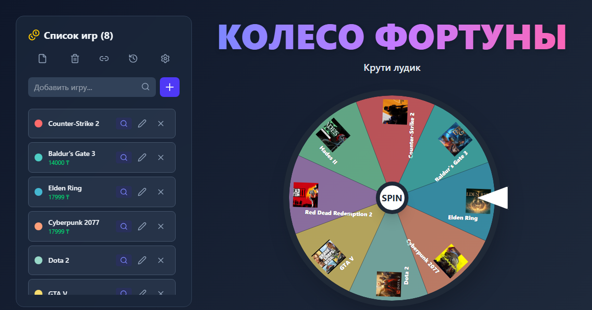

Загрузите список игр, крутите колесо и получайте случайный выбор с живыми ценами и скидками Steam. Делитесь своим колесом с друзьями одной ссылкой.
Крутить колесо →
Честная криптографическая рандомизация и плавная анимация прокрутки с затуханием.
Автоматический поиск игры в Steam, актуальная цена и размер скидки — прямо на колесе и в результате.
Короткая ссылка сохраняет ваш список игр и все настройки оформления — отправьте друзьям.
Свой фон, цвета секторов, обложки игр, текст кнопки, скорость вращения и звук.
Все выпавшие игры сохраняются — ничего не потеряется между сессиями.
Открыли — крутите. Всё работает в браузере, данные хранятся локально.